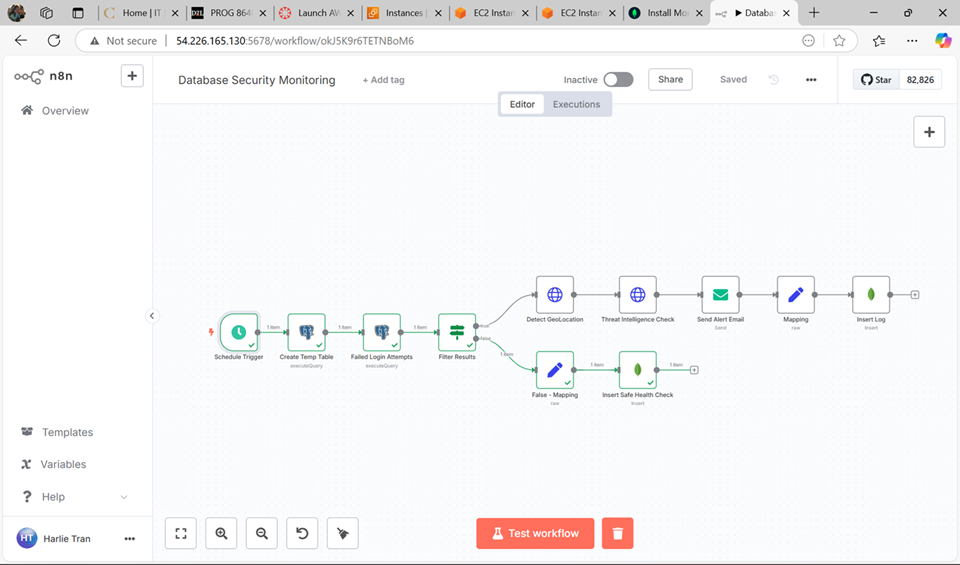
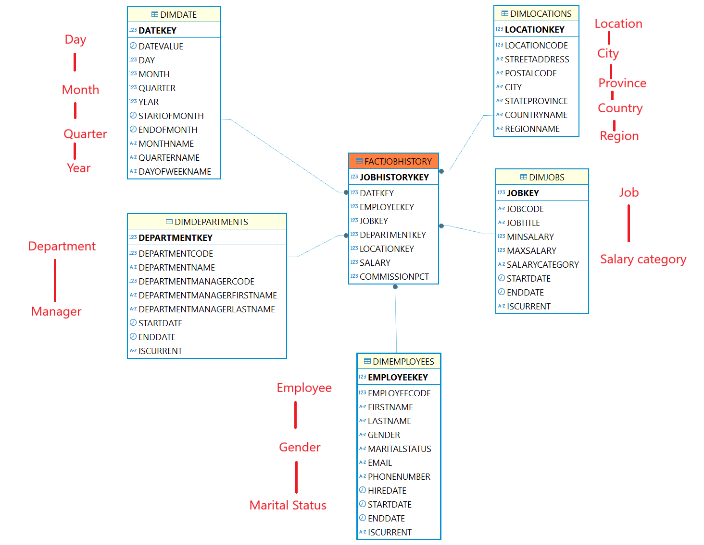
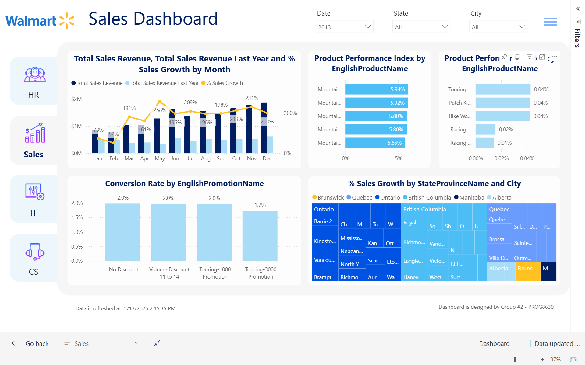

AI Agents: Using n8n workflow to detect suspicious login attempts
This project focuses on the implementation of an n8n workflow designed to monitor and alert on suspicious database login
activities. The system checks for failed login attempts in PostgreSQL every 5 minutes, filters results, enriches data
with geolocation, integrates threat intelligence, sends email alerts, and logs events to MongoDB.
n8n, AWS RDS Logs, PostgreSQL, MongoDB, Email Service Node (SMTP), Amazon EC2 (Cloud deployment), HTTP services
Demo
github

Oracle ETL: Using PL/SQL to extract data from the operational database (Oracle Human Resource dataset), tranform and load to data warehouse
This project involves the design and implementation of a Human Resource Data Warehouse aimed at enhancing workforce
analytics and strategic HR decision-making. Using Oracle technologies such as Oracle Data Integrator (ODI), PL/SQL, and
OLAP, the team transformed normalized HR data into a dimensional star schema to support fast querying and advanced
reporting. The system incorporates an ETL pipeline, multidimensional OLAP cubes, and a Power BI dashboard to analyze key
metrics like salary trends, job transitions, and regional distributions. The final solution enables HR professionals to
gain actionable insights through interactive dashboards and flexible data exploration.
Oracle, PL/SQL, Store Procedures, Star-Schema Model, Relational Model, Oracle Data Integrator,
OLAP Cube, Oracle Analytics Management View
github

Power BI: Using Power BI to visualize report data for Walmart's departments
The main goal of this project is to create a sophisticated dashboard and reporting system specifically for the four
departments of customer service, sales, information technology, and human resources. This dashboard's objectives are to
improve data visibility, optimize processes, and offer actionable insights—all of which will contribute to the growth
and efficiency of these vital services.
Power BI, Sharepoint, Data Modeling, Microsoft Excel, DAX, Power Query
github
Java Ecommerce Website: Using java to build ecommerce website whose product is scented candles
The Essential Scents project is a web-based e-commerce platform developed for the sale of premium scented candles,
focusing on delivering a seamless and intuitive shopping experience. It features distinct user roles—regular users and
administrators—with tailored journeys including product browsing, account management, and administrative dashboards for
inventory and user control. Core functionalities include secure authentication, product filtering, cart management, and
a structured layout.
Java, Vaadin, Spring Boot, Spring Security, MySQL, CSS
github